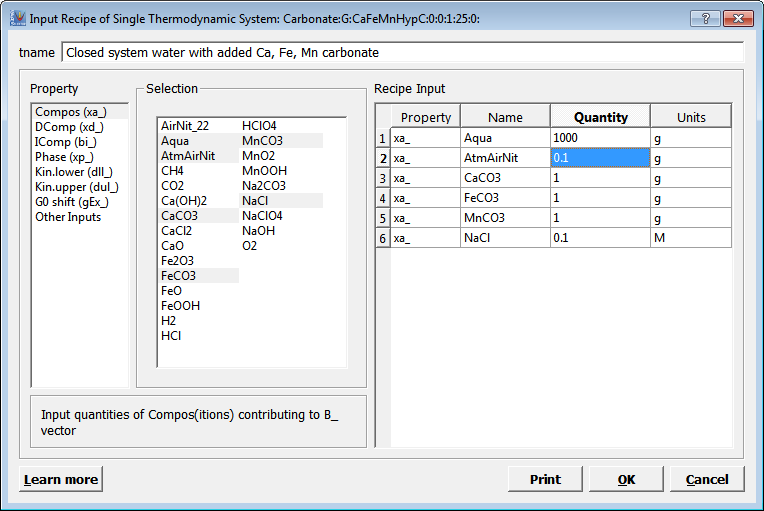
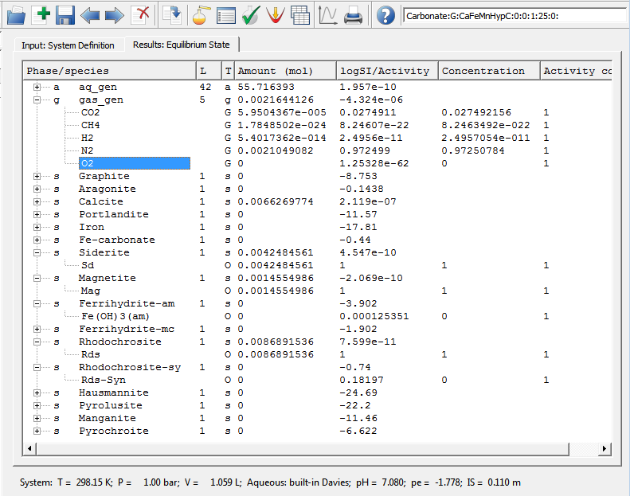

Previous Page Back to Start Page
(20) Our previous model
calculation shows
that it is not possible to have all three carbonate minerals (calcite,
siderite and rhodochrosite) at equilibrium with the atmosphere because
carbonates of Fe and Mn are not stable at oxidizing conditions.
Besides, the calculated
dissolved total iron concentration (log m
= -13.5) at
equilibrium with Goethite and total manganese (log m
= -15.9) are far too low compared to
those measured in oxic natural waters (log m
= -9 +- 1). So, it would be interesting to
see how the system would behave if almost all "atmosphere" is removed
and "hydromagnetite" is allowed to form together with Fe(III)
hydroxide.
In GEM-Selektor, you can easily "clone"
your
existing system definition and change it to test improved or new
modelling assumptions. In the "Single Thermodynamic
System" dialog, just click "Clone a new record from this one..." or
execute a Record -> New("Clone") menu command,
set a new record key: "Carbonat:G:CaFeMnHypC:1:0:1:25:0:":

and press "Ok". This will immediately bring you to the Recipe Dialog.
Change the comment line and
modify the recipe by addition of "Aqua" to 1000 g, that of "AtmAirNit" PCO
to 0.1
g, and that of NaCl to 0.1 mol, as shown below.

Now, click "Ok" to close the Recipe Dialog and get back to the "Single
Thermodynamic System" window.
With mouse clicks in the "On/Off" column, by turning '+' to '-', switch
off the "Goethite"
and "Hematite" phases in order to exclude them from GEM calculation of
the equilibrium state.
Then expand the "Magnetite" phase and double-click in the "G0 corr."
column to enter 5708 (J/mol) in order to
simulate a one logK unit (10 times) more soluble "hydromagnetite"
(press Enter to accept
changes):

When ready, click on the "Calculate BCC and check for conficts"  and then - "Calculate
equilibrium with GEM"
and then - "Calculate
equilibrium with GEM"  toolbar buttons.
Accept the calculation results after the GEM IPM module has converged. You
should see now something like that shown in a screenshot below (if you
expand some phases):
toolbar buttons.
Accept the calculation results after the GEM IPM module has converged. You
should see now something like that shown in a screenshot below (if you
expand some phases):

First
of all, a glance into the status line tells that our new system is now
mildly reducing (pe = -1.78) and neutral (pH = 7.08). Oxygen is now
physically absent ( f O2
= 1.25e-62) in a small
"bubble" of gas phase made of 97% nitrogen and 3% carbon dioxide.
All three carbonates (Calcite, Siderite, and Rhodochrosite)
now co-exist with (hydro)magnetite. Amorphous ferrihydrite is
undersaturated ca.
4 orders of magnitude.
What happened with total dissolved metal
concentrations? By clicking the "Open EqDemo window.."  toolbar button,
we get the "EqIC" page of "EqDemo"
window:
toolbar button,
we get the "EqIC" page of "EqDemo"
window:

In
the lgm_t column, one can see that dissolved iron and manganese are
now present in concentrations that are several orders of magnitude
greater than
those in the previous "open" system. By switching to the "EqDC" page,
you can
examine the detailed aqueous speciation of Ca, Fe and Mn.